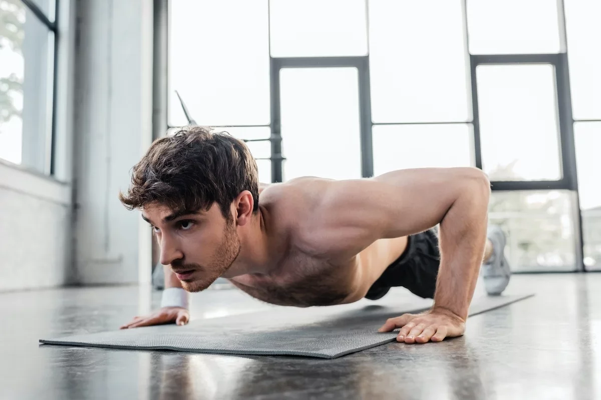
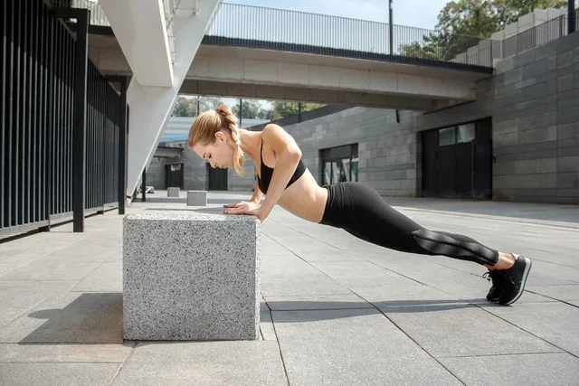
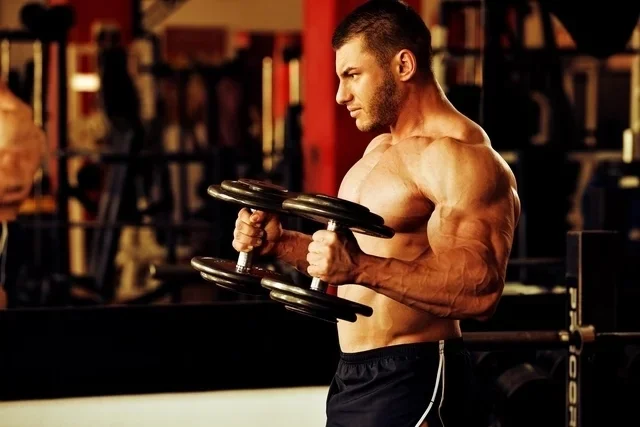
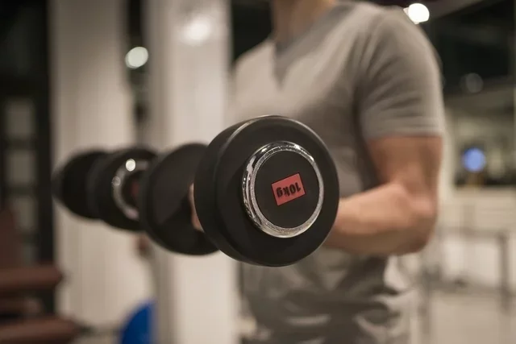
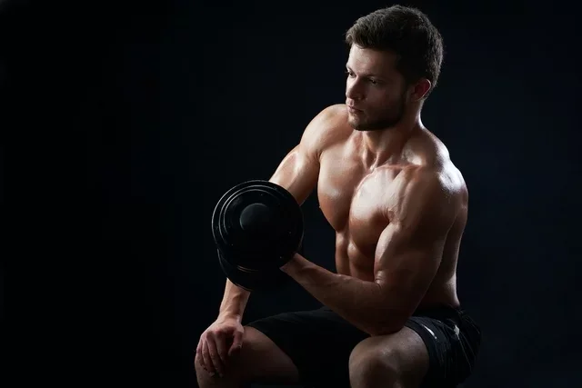
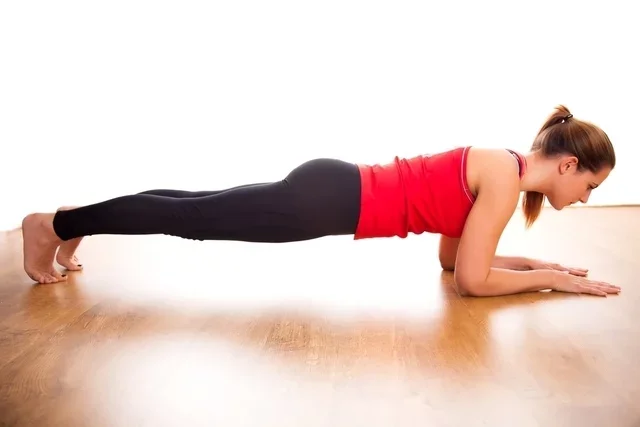
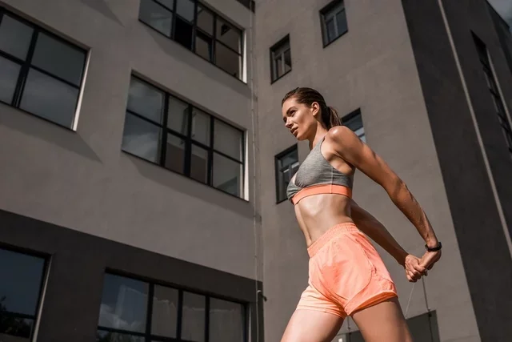
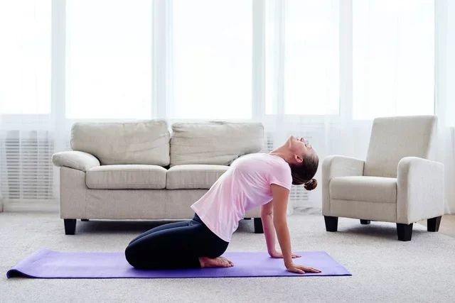

6 exercícios para treino de bíceps em casa
O treino de bíceps em casa é simples, fácil e ajuda a atingir diferentes objetivos, desde tonificar, até aumentar a massa magra e o volume muscular.
Estes exercícios podem ser feitos sem a utilização de pesos ou com pesos para resultados mais rápidos. No entanto, é importante ter em consideração as condições físicas e as limitações do corpo para evitar qualquer tipo de lesão como ruptura dos tendões ou tendinite, por exemplo.
O ideal é fazer uma avaliação médica antes de iniciar qualquer atividade física e ter orientação de um educador físico que deve indicar o peso para cada exercício de forma individualizada.
Como fazer o treino de bíceps em casa
O treino de bíceps em casa pode ser feito de 1 a 3 vezes por semana, em 2 a 3 séries de 8 a 12 repetições, dependendo do exercício. O ideal é escolher de 3 a 4 exercícios por treino.
Antes de iniciar o treino deve-se fazer o aquecimento para melhorar o desempenho muscular, ativar a circulação e prevenir lesões. Uma boa opção de aquecimento é movimentar os braços várias vezes num ritmo acelerado ou fazer polichinelo, por exemplo.
Algumas opções de exercícios para fazer um treino de bíceps em casa são:
1. Flexão de braço
Embora seja muito utilizada no treino de peito, a flexão de braços trabalha vários grupos musculares, incluindo os bíceps, o que permite ganhar massa e enrijecer os bíceps, especialmente quando não se tem halteres ou pesos em casa.
Como fazer: deitar de barriga para baixo, levantar o corpo esticando os braços alinhados ao corpo, em uma distância um pouco maior que a largura dos ombros, os pés no chão, abdômen contraído e costas alinhadas. Levantar e abaixar o corpo apenas dobrando e esticando os braços em um ângulo de 90º com o cotovelo. Não deitar no chão entre as flexões. Fazer as flexões por 30 segundos, descansar por 1 minuto e repetir por 2 a 3 séries. Caso o exercício seja muito difícil é possível realizá-lo com os joelhos no chão e, aos poucos, ir retirando os joelhos do chão.
2. Flexão de braço inclinada
A flexão de braço inclinada é outra variante da flexão que ajuda a trabalhar a força e a resistência dos bíceps, tríceps e deltóides. Além disso, ajuda a fortalecer o abdômen e as pernas.
Como fazer: pegar um uma superfície para criar a inclinação do seu corpo como Kettle, banquinho, cadeira, puff, bola de ginástica ou uma plataforma de exercício de step. Apoiar as mãos na superfície inclinada, com os braços alinhados ao corpo, em uma distância um pouco maior que a largura dos ombros e os pés no chão. O corpo deve reto com as costas alinhadas com o tronco. Contrair o abdômen, flexionar os cotovelos até que o peito encoste na superfície e retornar à posição inicial. Pode-se fazer 2 a 3 séries de 8 a 10 repetições cada, descansando de 60 a 90 segundos entre as séries.
3. Rosca martelo
O exercício “rosca martelo” é bastante eficaz para aumentar o volume dos bíceps e do músculo braquial, mas deve ser feita com o uso de peso ou halteres., Caso não se tenha este tipo de material, pode-se colocar um ou mais pacotes de 1kg de arroz ou de feijão dentro de duas mochilas ou bolsas do mercado, ou então usar garrafas pet com areia dentro, por exemplo.
Como fazer: de pé, segurar um peso em cada mão com a palma da mão voltada para dentro, com os braços para baixo alinhados ao corpo. Flexionar os cotovelos, elevando os antebraços até que os pesos se encontrem na altura do ombro. É importante estar com o abdômen contraído e que não se movimente os pulsos, nem os ombros, para não causar lesão. Voltar os braços para a posição inicial lentamente. Inspirar quando os braços estiverem na posição inicial e expirar ao flexionar os cotovelos. Pode-se fazer de 3 a 4 séries de 8 a 12 repetições cada, com 60 a 90 segundos de descanso entre as séries. Uma variação desse exercício é levantar os braços um de cada vez de forma alternada.
4. Rosca direta
O exercício “rosca direta” é outra boa opção para os bíceps, pois trabalha força, resistência, além de estimular o aumento da massa e do volume muscular. Para alcançar esses objetivos, deve-se usar pesos como halteres, barra ou garrafa pet com areia dentro, por exemplo.
Como fazer: de pé, com os pés afastados na largura dos ombros, joelhos um pouco flexionados e com o abdômen contraído, colocar o peso em cada mão ou segurar a barra com os cotovelos flexionados à frente do corpo e as mãos viradas para cima. Sem movimentar os ombros e com os punhos firmes, elevar os braços no sentido dos ombros e voltar à posição inicial lentamente. Inspirar quando os braços estiverem na posição inicial e expirar quando flexionar os cotovelos. Pode-se fazer de 3 a 4 séries de 8 a 12 repetições cada, com 60 a 90 segundos de descanso entre as séries.
5. Rosca direta sentado
A rosca direta sentado é outra opção de exercício para o bíceps que também trabalha força, resistência, aumento da massa e do volume muscular e deve-se usar halteres ou garrafa pet com areia dentro.
Como fazer: sentar em um banco ou cadeira com as pernas ligeiramente afastadas e coluna reta. Inclinar o tronco para frente e segurar o peso, apoiando o cotovelo na perna. A outra mão deve estar apoiada na outra perna para facilitar o equilíbrio do corpo. Contrair o braço levando o peso até a altura do rosto. Voltar o braço à posição inicial lentamente, controlando a descida do braço. Repetir o movimento com cada braço por 8 a 12 vezes em 3 a 4 séries, descansando de 60 a 90 segundos entre as séries.
6. Prancha de antebraço
Embora a prancha de antebraço seja um exercício mais focado no fortalecimento dos músculos do abdômen e core, também é considerado um exercício completo, ou seja que trabalha outras áreas do corpo, incluindo o bíceps. Neste exercício não é necessário uso de pesos ou halteres.
Como fazer: deitar de barriga para baixo e então elevar o corpo, apoiando no chão somente os antebraços e as pontas dos pés, sempre com o abdômen e glúteos contraídos e cabeça e corpo retos, alinhados com a coluna vertebral. Deve-se ficar parada nesta posição o máximo de tempo. Pode-se começar com 30 segundos e ir aumentando o tempo aos poucos. Este exercício não é feito em séries.
O que fazer depois do treino:
Após o treino de bíceps, deve-se fazer alongamentos para ajudar a relaxar a musculatura, tonificar os músculos, melhorar a flexibilidade, aumentar a circulação e prevenir lesões.
1. Esticar os braços para trás
O alongamento de esticar os braços para trás deve ser feito em pé para permitir alongar bem os bíceps, os músculos do peito e os ombros.
Como fazer: de pé, levar os braços para trás das costas até as mãos se encontrarem. Entrelaçar os dedos e levantar os braços segurando por 20 a 30 segundos. É importante sentir que os bíceps estão alongados, além de respeitar os limites do corpo
2. Estender os braços
Esse alongamento, permite alongar os bíceps, peitoral e coluna, e deve ser feito sentado.
Como fazer: sentar-se no chão com as pernas esticadas ou dobradas e as costas levemente inclinadas para trás apoiadas nos braços. Fazer esse movimento por 30 a 60 segundos.